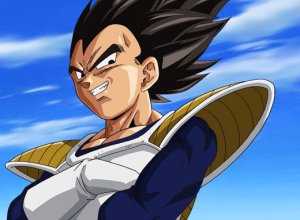

Vegeta, o Príncipe dos Saiyajins

Vegeta é um dos personagens mais conhecidos de Dragon Ball ,
criado por Akira Toriyama.orgulho .
Quer saber mais? Veja a página do Vegeta na Wikipédia .
Características
É um guerreiro da raça Saiyajin.
Começa como vilão e depois se torna aliado dos heróis.
Tem uma rivalidade com Goku, que o motiva a treinar sempre mais.
Fases da história do personagem
Chega à Terra como inimigo dos protagonistas.
Passa a lutar ao lado deles contra novas ameaças.
Forma uma família e continua treinando para ficar mais forte.
Clique aqui
Tags utilizadas (14)
Dupla: [Nome 1] e [Nome 2]
<div>
<h1>
<img>
<p>
<strong>
<em>
<br>
<a>
<hr>
<h2>
<ul>
<li>
<ol>
<button>
Também usamos a estrutura básica: html, head, meta, title, style e body.